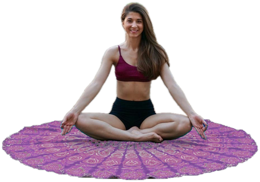

Yoga
Hatha yoga con elementi di Ashtanga, Sivananda e Vinyasa flow: posizioni, respiro e rilassamento, adatti a ogni livello.
Lunedì e mercoledì sera, su Zoom
Yoga · Posturale · Mindfulness
Sono Tiziana Amico, insegnante di yoga e di ginnastica posturale. Ti accompagno con lezioni dal vivo su Zoom, incontri di posturale in presenza a Roma e un'app dove la tua pratica continua anche a casa.
Insegnante RYT 250 Yoga Alliance Italia · Ginnastica posturale antalgica CSEN

Le lezioni
Ogni mese ha un tema che lega le lezioni tra loro, così la pratica cresce settimana dopo settimana.
Hatha yoga con elementi di Ashtanga, Sivananda e Vinyasa flow: posizioni, respiro e rilassamento, adatti a ogni livello.
Lunedì e mercoledì sera, su Zoom
Ginnastica posturale preventiva e antalgica, per una schiena più libera, articolazioni mobili e meno tensioni nella vita di tutti i giorni.
Martedì e giovedì: al mattino in presenza, la sera su Zoom
Un percorso mensile di attenzione e consapevolezza, con una meditazione guidata del mese da ascoltare quando vuoi.
Nell'app Mandala, ai tuoi tempi
Orari
Le lezioni si tengono da ottobre a giugno.
Le lezioni in presenza si tengono a Roma. Scrivimi per sapere dove e per prenotare una lezione di prova.
L'app delle allieve
Chi pratica con me entra in Mandala, uno spazio semplice dal telefono o dal computer.
Chi sono
Vengo dalla danza: mi sono diplomata all'Accademia Nazionale di Danza di Roma e ho danzato per diversi coreografi prima di dedicarmi all'insegnamento.
Dal 2015 insegno yoga e ginnastica posturale a Roma, in palestre, associazioni e scuole di danza. Seguo gruppi e lezioni individuali, adulti e bambini, donne in gravidanza e nel recupero dopo il parto.
Nelle mie lezioni porto l'attenzione al corpo che ho imparato danzando, insieme all'anatomia, al respiro e alla meditazione.
Come iniziare
Raccontami come stai, cosa cerchi e quali orari preferisci.
Su Zoom o in presenza, per capire se il mio modo di insegnare fa per te.
Ricevi l'accesso all'app con le lezioni registrate e il tuo mandala personale.
Per informazioni, una lezione di prova o per entrare in Mandala. Ti rispondo appena posso.